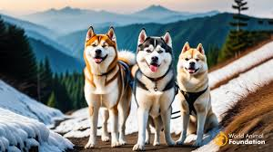

Página sobre Huskys

Esta raza es muy conocida por su buen carácter y por ser muy cariñosa con la gente, por lo que no son perros guardianes por naturaleza. Les encanta y necesitan estar acompañados y no deberán quedarse solos durante mucho tiempo, ya que pueden volverse muy destructivos. Les gusta estar con otros perros bien adiestrados, aunque son cazadores ágiles y eficientes, por lo que deberán adiestrarse con cuidado para que puedan estar en contacto con otros animales domésticos. Aunque no suelen ladrar, sí que aúllan, a veces solo por el simple placer de hacerlo.
La del husky siberiano suele ser una raza sana y resistente.
Sin embargo, al igual que muchas otras razas, puede sufrir trastornos
oculares hereditarios y, en ocasiones, displasia de cadera (una enfermedad
que puede provocar problemas de movilidad). Por tanto, es importante un examen
de la cadera y de los ojos antes de dedicar al perro a la crianza.
A su vez
Esta raza necesita hacer mucho ejercicio, aunque deberá hacerlo en una zona segura
y acotada, o con correa, ya que tienen muchas ganas de correr si se les deja sueltos
y no suelen responder a la llamada de su dueño para volver.
La raza Husky está íntimamente relacionada a la nieve y a los trineos.
Se originó en Siberia, en Rusia, siendo usados como perros de trabajo. Tiene una gran similitud con los lobos.
Su tamaño es mediano y pesa cerca de 30 kg. Puede llegar a medir 60 cm de alto.
Se dice que el Husky fue criado originalmente por la tribu Chukchi, siendo usado como compañía,
para tirar de los trineos de nieve, pastorear a los ciervos y mantener calientes a los niños.
Es posible hallarlo en todo el mundo.
Husky Siberiano
Es un perro de tamaño mediano y peso ligero, a pesar de lo que su apariencia pueda suscitar, casi toda la envergadura de un Husky Siberiano es, de hecho, puramente pelaje.Por debajo del punto de congelación, el Husky Siberiano posee un pelaje denso y grueso bien pegado al cuerpo, nunca largo (esta característica conocida como Wooly Husky es una mutación genética negativa)

Husky Malamute
Esta es una de las razas caninas más antiguas del planeta, pues se sospecha que sus ancestros ya eran criados por los hombres del Paleolítico. El nombre proviene de una tribu inuit nómada, denominada "mahlemiut".
Husky Samoyedo
Se trata de un perro originario de Rusia y Siberia, donde recibió el nombre de una tribu seminómada proveniente de Asia. No obstante, no es un tipo de huksy, sino que es una raza reconocida. En la antigüedad, el samoyedo era utilizado como cazador, perro guardián y para mantener el calor de las personas durante las noches de invierno.
El aseo es bastante fácil: normalmente basta con peinarlo y cepillarlo bien dos o tres veces a la semana, aunque durante la época de muda deberás cepillarlo a diario. Es una raza muy limpia que tiene muy poco o ningún «olor a perro».
Aunque tradicionalmente la mayoría de perros son buenos con los niños, todos los perros y niños necesitan que se les enseñe a llevarse bien y a respetarse mutuamente para estar seguros. Aun así, los perros y los niños pequeños nunca deberían quedarse solos y los adultos deben supervisar todas las interacciones entre ellos.
Esta foto es el primer dia que recibí a Galleta, era muy pequeña y quietesita, al inicio jugaba muchisimo con mis perros.
Galleta a sus 2 meses de nacida
Etapa 1
En esta etapa Galleta ya era muy traviesa, termino con las macetas, además agarro la costumbre de sacar la basura, eso si es muy limpia, no se hace del baño dentro de la casa.
Galleta a sus 7 meses de nacida
Etapa 2

Actualmente Galleta es muy activa y celosa con los demás perros (hay otros 3) Tengo que sacarla
por lo emnos una vez a la semana sino comienza a hacer sus desastres desde tirar basura hasta romper las cobijas que le tengo en su casa.
Tambien tiene una fuerza increible (ya me ha tumbado 2 veces :c)
Galleta a sus casi 2 años de nacida
Etapa 3